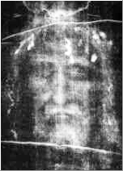
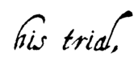
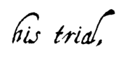

|
Jacques de Molay's Curse
[Survival of the Order of Temple] [The Shroud of Turin]
 L
L
ike the martyrs who sang praises to God, Jacques de Molay sang hymns amidst the flames. Mezeray reported that the Grand Master was heard to have shouted: "Clement! Sinful judge and cruel executioner! I postpone your holy judgment for 40 days!" According to Vertot, several have written that de Molay also promised holy judgment for the king in one year. Perhaps the death of the Pope and king in precisely these time frames gave birth to the tale of postponed holy judgment. A later legend alleges the Temple Grand Master to have shouted: "Damn you! Damn you! You and your family will be damned for 13 generations!" The crowd wept at such a tragic spectacle, and it is claimed that some devout onlookers ran to gather up the worthy knights' ashes. If these kinds of traditions are not always true, they at least support the idea that public opinion leaned toward the innocence of the condemned men. As Bossuet summed the matter up perfectly: "They confessed under torture, but renounced in agony and death."
Clement V died a month after de Molay's execution on April 20, 1314 from a terrible illness; Guillaume de Nogaret, who oversaw the Templars arrest throughout France in 1307 was poisoned to death on April 27, 1314; while Philip the Fair died a few months later, on November 29, 1314 while on a boar hunt (he apparently fell off his horse). On his death, his eldest son Louis X (the Quarrelsome) rose to the throne. Yet he died two years later, at the age of 26, from a fever contracted while cooling off in a damp cave after a heated game of lawn tennis. Since his wife, Queen Clemence, was pregnant, Philip the Tall, Louis' brother, accepted the title of regent. Clemence gave birth on November 15, 1316 to a boy named Jean, who lived only five days (John I the Posthumous.)
Philip then took the title of king under the name Philip V, but this action did not go uncontested. Louis X had previously had a girl named Jeanne with his first wife, Marguerite, heiress to the Kingdom of Navarre; her uncle, the Duke of Burgundy, claimed she should inherit the French Kingdom as well. Since this was the first time since Hugues Capet that the crown did not pass directly from father to son, having it passed back from nephew to uncle could pit the custom of countries where women may rule against customs of the first two dynasties excluding them from the throne. This contestation was solemnly ruled upon at an assembly in Paris in favor of ancient interpretations still in force, though no reference to it as relating to the crown could be found in any written law, even Salic law. Philip V reigned six years and died at the age of 29. Philip the Fair's youngest son, Charles IV, then rose to the throne in 1322, but died himself six years later. He was 33 years old.
Thus in the span of 14 years, Philip the Fair's three sons, all of whom took after their father's handsomeness and the hope of a long life and numerous offspring, rose to the throne and died without leaving heirs. The crown then passed down a tributary bloodline to a certain Philip of Valois, first blood prince; but since the widow of the late king was herself pregnant, he could only hold the title of regent until the birth of her daughter. Salic law, invoked in 1316 by Philip the Fair's second son to take possession of the throne, cemented the extinction of the Capetian dynasty.
Survival of the Order of the Temple
[Jacques de Molay's Curse] [The Shroud of Turin]
DDid Jacques de Molay take measures to preserve the Templars' secret documents and treasure? Had he hoped the Order of the Temple might survive him? No historical evidence leads to a firm conclusion, but several theories have been put forth, including three detailed below considered the most plausible by historians:
-
The Gérard de Villers Theory
In June 1308, Templar Jean de Chalon of the Nemours Temple made an interesting statement to the Pope himself: the night before Jacques de Molay's arrest, a procession consisting of three straw-covered wagons left the Paris Temple driven by two Templars, Hugues de Chalons and Gerard de Villers, Preceptor of France. One can easily imagine that on the orders of the Grand Master, these wagons had been loaded with documents and gold, the 50 horses intended to replace ones exhausted during a long trip.
Moreover, with the same goal in mind, the Order's ships, the largest armada in the West and docked at their home port in La Rochelle, left the port to an unknown destination most likely in the north of France. When the king's militia reached La Rochelle, the giant fleet was gone. The carts that left the Paris Temple on the night of October 12, 1307 were surely heading north to load their cargo onto the boats arriving from La Rochelle and disappear, never to be seen again.
What happened to the fleet or where it was headed has never been known, but it is likely a large part of it sailed to the coasts of Iberia. In fact, many Templars took refuge in Spain and most notably Portugal, where they joined the Order of the Knights of Christ created specially for them by King Diniz in 1312. -
The Pierre d'Aumont Theory
Despite the "catastrophe" (the mass arrest of 1307), a number of Templars managed to hide throughout France. One of them was Pierre d'Aumont, former Grand Master of Auvergne. He remained with de Molay until his final day, as if the secret hope of seeing his master freed prevented him from going into exile as so many others had done. Perhaps that was one of the Grand Master's final wishes, for on the evening of March 18, 1314, d'Aumont and eight other Knights, disguised as masons, gathered up de Molay's ashes, pointed their swords toward the stake and cried: "MacBenach*!". They swore to avenge their master and keep the Order of the Temple alive. D'Aumont allegedly fled to Scotland and, on the Isle of Mull, was named new Grand Master of the Order on June 24, 1315. The story goes that this cadre of Templars provided vital help to King Robert Bruce in his battle against the English, and were behind the establishment of the Heredom (or "Holy House") Freemason lodge.
* This expression comes from the Hebrew "Makbenach" which means "flesh leaves the bones." It was first used as a rallying cry by comrades of architect Hiram – who built the Solomon Temple in Jerusalem – when they discovered their master savagely murdered and swore to avenge him. Ever since, across the century, Hiram's avengers' cry has become the symbol of the people's battle against the tyranny of kings. The ritual murder of Hiram, the quest for his corpse by nine workmen and his burial already served as a central initiation rite of the Templar Knights in the Middle Ages; they were raised again by Freemasons in the 18th century and survive to this day.
-
The Dante Alighieri Theory
Originally a member of the Guelph party which supported the Pope, Dante (and other White Guelphs) took sides with des Gibelins and Emperor Henry VII. When the terrible Black Guelphs took power in Florence in 1302, Dante was condemned to death. He left the city, never to return.
From that date forward, Dante resided in various northern Italian cities, most notably Verona, and made several trips to France. He is known to have visited Paris in 1304, and again between 1307 and 1310. Some historians think Dante met Jacques de Molay right before his 1307 arrest. The reason behind this encounter is unknown, but it is likely de Molay entrusted a mission or documents to the Italian poet. It is known that Dante was a member of the Faithful of Love, an initiatory secret brotherhood that shared the chivalric values of the Order of the Temple. It is therefore possible that de Molay revealed some of his secrets to Dante. The latter returned to Paris in 1314 to witness the death of the Grand Master on the stake. In his famous "Divine Comedy" trilogy (Hell – Purgatory – Paradise), he makes several allusions to the Templars, their martyr and their possible resurgence.
Other bizarre theories today known to be false continue to survive in the collective imagination: the Guichard de Beaujeu theory – who supposedly recovered part of the Templar treasure – is based upon the so-called Schiffman document, which is highly controversial; the Larmenius theory – the self-proclaimed chosen successor to de Molay – is based on documents discovered in 1804 by Bernard Raymond Fabré-Palarprat but since proven false; the Geoffroy de Gonneville theory – who supposedly escaped from prison and perpetuated the Order – is a vast deception perpetrated by the guru of a fiendish cultÉ
We will never know for certain what de Molay's final wishes were, nor what he gave to and/or ordered his Knights and friends to do just before his arrest. Yet history does prove that the Templars effectively took refuge in Portugal and Scotland after 1314. It is also known that Dante's Faithful of Love had many points in common with the Templars, particularly their strong penchant toward the esoteric and the hermetic. So even if these theories have sometimes been tainted by legends throughout the years, and even if they have often been picked up and twisted by suspect cult groups, everything lends credence to the idea that they have a basis in historical reality.
The Shroud of Turin
[Jacques de Molay's Curse] [Survival of the Order of the Temple]
Carbon 14 dating performed in 1988 on the Shroud of Turin have determined that it dates back to a period spanning the end of the 12th century and the early 14th century. As a basis for comparison, a double-blind analysis was performed on a cope belonging to Louis IX, resulting in the almost absolute certainty that the ceremonial cloak dates back to between 1263 and 1283; this squares perfectly with historical data, since the king died of the plague in Tunis in the year 1270. Results based upon other samples have also been just as accurate when compared with specific dates. The conclusions surrounding the Shroud of Turin cannot be refuted. Moreover, it has been scientifically proven that the flax used to weave the shroud was cut between 1260 and 1390, as narrowed down by carbon 14 dating.
Since the face represented on the shroud cannot be that of Jesus, to whom did it belong? Christopher Knight and Robert Lomas addressed this sensible question in their book "The Second Messiah." In their mind, there is no doubt that the face seen on the shroud is that of Jacques de Molay. Their version has the advantage of being far simpler and more believable than the tortured one defended by those who think it is Christ.
According to the latter group, the Shroud of Christ was supposedly recovered by a certain Abgar, King of Edessa (city of Urfa, Turkey) who converted to Christianity in the early 1st century; he supposedly held onto the shroud after contact with it cured him of leprosy. After his successor reverted back to paganism, the city's Christians allegedly hid the relic away for five centuries. In 944, the Byzantines, who called it "mandylion" (the Greek word for an ecclesiastic robe) allegedly took it back from the Muslims who held Edessa at the time. The shroud was then supposedly housed in Constantinople until 1204, date of the first sacking of the city by Crusaders from the 4th Crusade. This is when the Templars purportedly got ahold of it. A century later, it is supposed to have reached the hands of Geoffroy de Charnay, then Governor of Normandy and unfortunate companion of Jacques de Molay on the stake on March 18, 1314.
For Knight and Lomas, this shroud was recovered by de Charnay directly between 1307 and 1314, and the face it depicts is that of de Molay. To reach this conclusion, they make the following six points:
-
Theirs is the only version that precisely matches the scientific analysis performed on the shroud.
-
The shroud was used to cover Jacques de Molay after a particularly horrific torture session arranged by Guillaume Imbert, confessor to the king and Grand Inquisitor. De Molay was whipped until he bled, had a crown made from sharp objects forced on his head to tear up his scalp, and was finally nailed to wooden boards crucifixion-style. Such torture caused chemical reactions in the Grand Master which led to the impression of his face and body on the shroud.
-
There were two reasons for crucifying him: first, the Inquisition had a fondness for this form of torture, and second, for Imbert, it was a way of punishing the Templar for his supposed sin (the Templars had been accused of heresy for denying Christ's death upon the cross).
-
They always stripped their victims before torturing them, and had the habit of nailing them to nearby objects.
-
It has been scientifically proven that the man on the shroud had to have been alive and laid out on a bed to have made that impression. That was the case with Jacques de Molay, who was nearly comatose but still alive after his interrogation, while Jesus was dead and laid out on a slab after his crucifixion.
Two years later, Jacques de Molay was able to point out his wounds and scars at an appearance before a papal commission, as evidence of the abuse he had suffered.
Their theory is also confirmed by the history of the shroud as it has been known since 1357, when it was put on display for the first time. In June 1353, John II the Good authorized Geoffroy de Charnay to build a collegiate church in Lirey. De Charnay was none other than the grand-nephew of the other Geoffroy de Charnay, killed in 1314. The church was consecrated on May 28, 1356, and it is worth noting that on that date, no shroud is mentioned in the inventory of goods belonging to the religious site.
Four months later, Geoffroy de Charnay was killed in the battle of Poitiers. Jeanne de Vergny, his impoverished widow, sought other means of existence. In the inventory of her husbands possessions she found the carefully folded shroud. Spreading it out, she saw the image of a man who might have resembled Christ. Although she surely knew it was the image of Jacques de Molay, she quickly concluded she could turn a profit on the relic. She put it on display as a relic in the Lirey church and had a commemorative medal struck of it which she sold for a high price.
The Church, which knew the shroud displayed the face of de Molay and not that of Jesus, ordered the shroud destroyed. Jeanne stopped displaying the shroud, but chose to hide it rather than destroy it.
After later remarrying Aymon de Genevainto, a nobleman with excellent standing in the Church, she was able to consider displaying the shroud once more. She did so in 1389 with the blessing of the Pope (who was none other than her nephew through marriage) and despite efforts to stop her by the French clergy who knew the shroud was a fake.
In fact, the Pope agreed to close his eyes to the entire hoax for one simple reason: At the time, Jacques de Molay was routinely considered a holy martyr and even compared to Jesus himself, who was also killed by Rome (this time it was not by the Roman Empire, however, but the Roman Church). When the black plague swept across the Christian world, the Church feared the miraculous image of de Molay on the shroud would come to represent only how the Inquisition crucified the Grand Master of the Order of the Temple before putting him to death. It was essential that the identity of the man who left his impression on the cloth not be discovered, for the Church risked being swept away by a new cult, that of Jacques de Molay, comparable to the one of Jesus Christ from which he came. They countered this risk by agreeing to display the shroud in public, all the while claiming it indeed depicted the face of Christ when they had argued the opposite before.
[Jacques de Molay's Curse] [Survival of the Order of the Temple] [The Shroud of Turin]
   |